原文连接:https://www.cnblogs.com/hama1993/p/12034514.html
🐜 版本信息：
🐞 JDK：1.8+
🐌 IDEA：2019.3
🐝 插件项目基于gradle构建。
🦟 知识背景：swing
🦇 参考文档：
http://www.jetbrains.org/intellij/sdk/docs/tutorials/build_system/prerequisites.html
http://www.jetbrains.org/intellij/sdk/docs/user_interface_components/tool_windows.html
http://www.jetbrains.org/intellij/sdk/docs/user_interface_components/dialog_wrapper.html
https://intellij-support.jetbrains.com/hc/en-us/community/posts/360003338799-Build-compatible-plugin
目标
本实例实现一个Idea的插件，弹出一个表单Dialog，然后点击按钮，获取表单里输入的内容，然后将内容打印在表单的上方。
成品图展示：
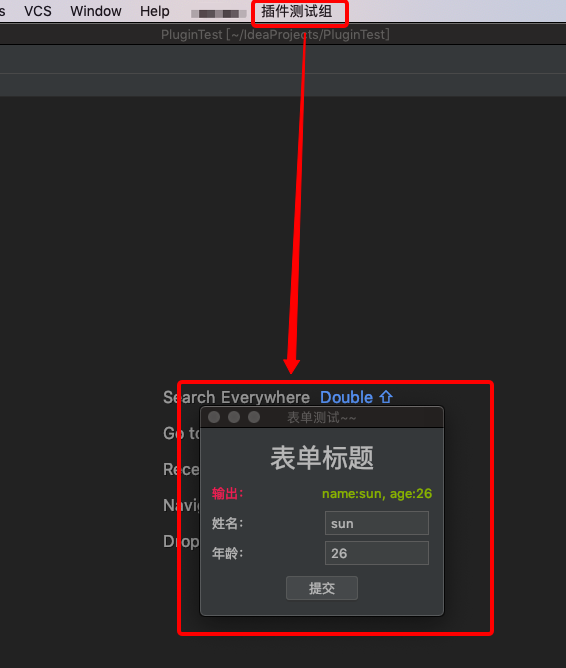
图1
一、项目初始化
新建一个gradle项目，修改其build.gradle文件：
plugins {
id 'java'
id 'org.jetbrains.intellij' version '0.4.14' //引入intellij的gradle插件
}
group 'org.example'
version '1.0' //定义jar包/zip包的版本号
sourceCompatibility = 1.8 //限制jdk的使用版本号，这里限制到8，表示生成的idea插件只能运行在jdk8以上的环境中
repositories {
mavenCentral() //远程仓库
}
dependencies {
//这里引别的依赖包
testCompile group: 'junit', name: 'junit', version: '4.12'
}
// See https://github.com/JetBrains/gradle-intellij-plugin/
intellij {
// 这里是指打插件包的时候用idea什么版本的依赖包打
// 比如这里用2019.3打包，如果你的插件实现源码里用了2019.3不存在的依赖包或类，就会报错
// 一般就填当前IDEA的版本号即可
version "2019.3"
}
patchPluginXml {
//changeNotes里的内容展示位置参考图14
changeNotes """
1.0版本.
第1.0版本：初始化这个测试插件项目"""
// 这个意思是说当前定义的这个插件最早支持到什么版本的IDEA
// 这里配置sinceBuild=191，表示插件只能被版本号大于等于2019.1版本的IDEA安装，低于这个版本的将抛无法兼容的错误
// ↑上方参考这篇问答：https://intellij-support.jetbrains.com/hc/en-us/community/posts/360003338799-Build-compatible-plugin
sinceBuild "191"
}
然后Idea的右边栏gradle将会多出intellij选项：
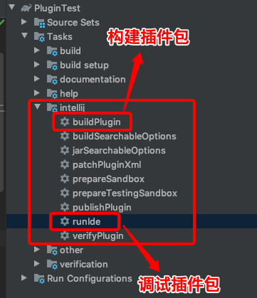
图2
这里说下runIde，它用来调试插件，运行它会再次启动一个Idea，这个Idea会自动安装上你当前定义的插件包，让你用来调试。
二、新增plugin.xml
这个文件非常重要，它可以指定你定义的插件出现在IDEA的哪个位置，可以指定具体的处理逻辑，还可以定义插件名称、子名称等等。
这个文件位于MATE-INF下：
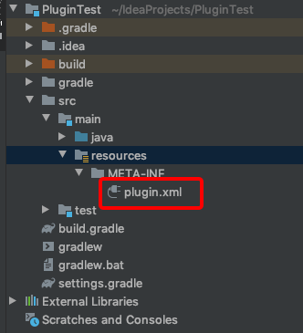
图3
配置内容为：
<idea-plugin>
<!--插件的id，注意不要跟其他插件重复，这个id全局唯一，尽可能复杂些-->
<id>plugin.test</id>
<!--插件的名称-->
<name>PluginTest</name>
<vendor email="xxxx@qq.com" url="http://www.bilibili.com">你公司的名字</vendor>
<!--插件的描述信息，支持html，展示的位置参考图14-->
<description><![CDATA[
Plugin Test<br>
第一行：单纯只是个测试<br>
第二行：都说了只是个测试(●￣(ｴ)￣●)<br>
<a href='https://www.bilibili.com'>你猜猜这是哪个网站？</a>
<em>v1.0</em>
]]></description>
<extensions defaultExtensionNs="com.intellij">
<!-- Add your extensions here -->
</extensions>
<!--跟build.gradle里的sinceBuild一致即可，意义相同，必须配置-->
<idea-version since-build="191"/>
<actions>
<!--下面的group是分组，分组需要有一个唯一的id标识，text用来控制分组出现在IDEA时呈现的文案，description是描述，不会展现出来，简单描述下分组就行-->
<group id="PluginTest" text="插件测试组" description="插件测试描述">
<!--add-to-group控制把该分组加到IDEA里，group-id用来描述加在哪个位置，MainMenu表示加在IDEA上方的主菜单栏里，
anchor表示顺序，last表示最后一个，所以下面的配置可以描述为：将该插件加到IDEA上方主菜单栏的最后一位-->
<add-to-group group-id="MainMenu" anchor="last"/>
<!--这个用来指定一个分组下的触发动作，同样的需要一个id，自定义；class就是用来处理这个动作的逻辑类，具体的插件逻辑都会写到对应的action类里，text用来控制文案，description为描述-->
<action id="Plugin.Test.Action"
class="plugin.test.FromAction"
text="表单测试" description="表单测试描述"/>
</group>
</actions>
</idea-plugin>
然后定义一个Action类，记为FormAction，继承AnAction，实现其抽象方法actionPerformed即可：
public class FromAction extends AnAction {
@Override
public void actionPerformed(@NotNull AnActionEvent e) {
//TODO 这里放插件逻辑
}
}
三、启动
现在双击runIde即可调出另外一个安装了这个插件的IDEA界面，然后可以看运行结果进行调试。 runIde还支持debug模式，不过运行时要右击选择：
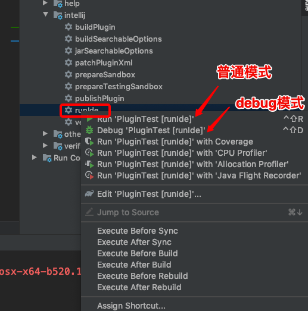
图4
来看下调试IDEA的界面运行效果：
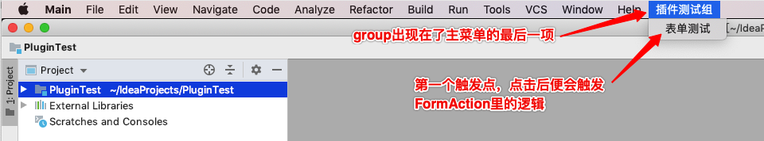
图5
四、定义Action
4.1：定义会话框类
经过上面三步的配置，插件的基本样式已经展示出来，但是点击下方“表单测试”的action，并没有什么用，因为其绑定的FormAction类里没有任何有意义的实现。现在来实现开始的目标，点击“表单测试”后，弹出一个自定义的表单会话框，然后点击按钮，获取表单内容后打印在会话框内。
会话框（Dialog）需要定义一个继承了IDEA的DialogWrapper抽象类的子类，这个子类就是自定义的会话框实现，所有的样式定义、功能触发都是放到这个子类里的，现定于如下子类：
public class FormTestDialog extends DialogWrapper {
private String projectName; //假如需要获取到项目名，作为该类的属性放进来
// DialogWrapper没有默认的无参构造方法，所以需要重写构造方法，它提供了很多重载构造方法，
// 这里使用传project类型参数的那个，通过Project对象可以获取当前IDEA内打开的项目的一些属性，
// 比如项目名，项目路径等
public FormTestDialog(@Nullable Project project) {
super(project);
setTitle("表单测试~~"); // 设置会话框标题
this.projectName = project.getName();
}
// 重写下面的方法，返回一个自定义的swing样式，该样式会展示在会话框的最上方的位置
@Override
protected JComponent createNorthPanel() {
return null;
}
// 重写下面的方法，返回一个自定义的swing样式，该样式会展示在会话框的最下方的位置
@Override
protected JComponent createSouthPanel() {
return null;
}
// 重写下面的方法，返回一个自定义的swing样式，该样式会展示在会话框的中央位置
@Override
protected JComponent createCenterPanel() {
return null;
}
}
4.2：会话框模块&类元素对照
找个实际的会话框为例，针对上述中几个方法所控制的会话框里的元素如下：
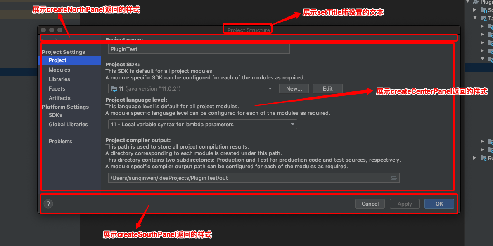
图6
4.3：自定义会话框元素
4.3.1：会话框方法重定义
按照本文的实现目标，自定义的表单主体部分可以位于createCenterPanel里，然后表单的大标题可以放到createNorthPanel里，提交按钮可以放到createSouthPanel里，现在改写如下：
public class FormTestDialog extends DialogWrapper {
private String projectName;
//swing样式类，定义在4.3.2
private FormTestSwing formTestSwing = new FormTestSwing();
public FormTestDialog(@Nullable Project project) {
super(true);
setTitle("表单测试~~"); //设置会话框标题
this.projectName = project.getName(); //获取到当前项目的名称
init(); //触发一下init方法，否则swing样式将无法展示在会话框
}
@Override
protected JComponent createNorthPanel() {
return formTestSwing.initNorth(); //返回位于会话框north位置的swing样式
}
// 特别说明：不需要展示SouthPanel要重写返回null，否则IDEA将展示默认的"Cancel"和"OK"按钮
@Override
protected JComponent createSouthPanel() {
return formTestSwing.initSouth();
}
@Override
protected JComponent createCenterPanel() {
//定义表单的主题，放置到IDEA会话框的中央位置
return formTestSwing.initCenter();
}
}
4.3.2：自定义swing样式
下面是放置swing样式的类：
public class FormTestSwing {
private JPanel north = new JPanel();
private JPanel center = new JPanel();
private JPanel south = new JPanel();
//为了让位于底部的按钮可以拿到组件内容，这里把表单组件做成类属性
private JLabel r1 = new JLabel("输出：");
private JLabel r2 = new JLabel("NULL");
private JLabel name = new JLabel("姓名：");
private JTextField nameContent = new JTextField();
private JLabel age = new JLabel("年龄：");
private JTextField ageContent = new JTextField();
public JPanel initNorth() {
//定义表单的标题部分，放置到IDEA会话框的顶部位置
JLabel title = new JLabel("表单标题");
title.setFont(new Font("微软雅黑", Font.PLAIN, 26)); //字体样式
title.setHorizontalAlignment(SwingConstants.CENTER); //水平居中
title.setVerticalAlignment(SwingConstants.CENTER); //垂直居中
north.add(title);
return north;
}
public JPanel initCenter() {
//定义表单的主体部分，放置到IDEA会话框的中央位置
//一个简单的3行2列的表格布局
center.setLayout(new GridLayout(3, 2));
//row1：按钮事件触发后将结果打印在这里
r1.setForeground(new Color(255, 47, 93)); //设置字体颜色
center.add(r1);
r2.setForeground(new Color(139, 181, 20)); //设置字体颜色
center.add(r2);
//row2：姓名+文本框
center.add(name);
center.add(nameContent);
//row3：年龄+文本框
center.add(age);
center.add(ageContent);
return center;
}
public JPanel initSouth() {
//定义表单的提交按钮，放置到IDEA会话框的底部位置
JButton submit = new JButton("提交");
submit.setHorizontalAlignment(SwingConstants.CENTER); //水平居中
submit.setVerticalAlignment(SwingConstants.CENTER); //垂直居中
south.add(submit);
return south;
}
}
现在点击下runIde按钮，同样的，在调试IDE里点击“表单测试”，然后就会弹出如下表单框：
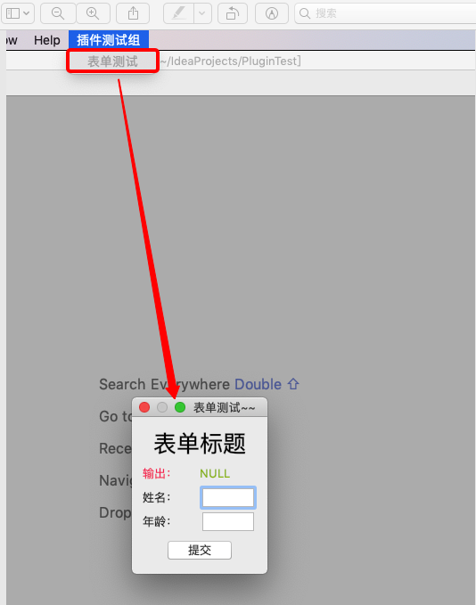
图7
🌿 除非有特殊情况需要自定义swing样式，否则建议不加任何swing样式，这样自定义的swing界面是会随着IDEA的主题改变而去自适应的，比如将图7中的调试IDE的主题设置成Darcula，自定义的表单也会自适应的变成黑色背景：
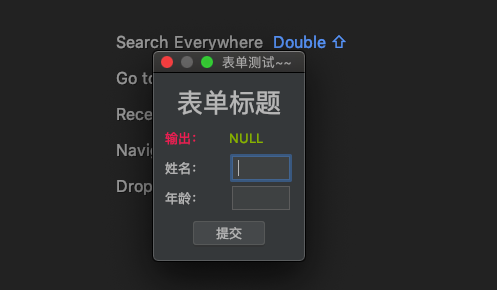
图8
4.3.3：事件绑定
定义好了样式，现在给“提交”按钮绑定一个事件，现在改写下FormTestSwing.initSouth方法：
public JPanel initSouth() {
//定义表单的提交按钮，放置到IDEA会话框的底部位置
JButton submit = new JButton("提交");
submit.setHorizontalAlignment(SwingConstants.CENTER); //水平居中
submit.setVerticalAlignment(SwingConstants.CENTER); //垂直居中
south.add(submit);
//按钮事件绑定
submit.addActionListener(e -> {
//获取到name和age
String name = nameContent.getText();
String age = ageContent.getText();
//刷新r2标签里的内容，替换为name和age
r2.setText(String.format("name:%s, age:%s", name, age));
});
return south;
}
现在再来点击下“提交”按钮，就可以输出表单内容了：
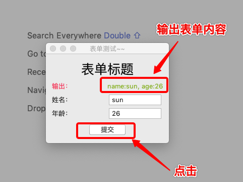
图9
五、插件的打包&安装
截止到第四步，都只是在调试IDE里查看效果，如果一个插件开发完成后，需要被实际的IDEA安装，这个时候就需要借助打包选项来打包你的插件，点击下面的选项构建插件：
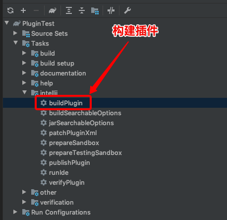
图10
构建完成后，查看build包下的distributions目录，里面的zip包就可以直接安装进你的IDEA：
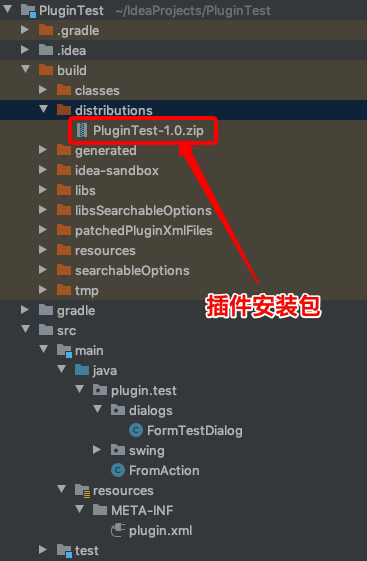
图11
然后选择IDEA的Preferences下的plugins选项，弹出如下框，按照图里的指示选择zip包安装即可：
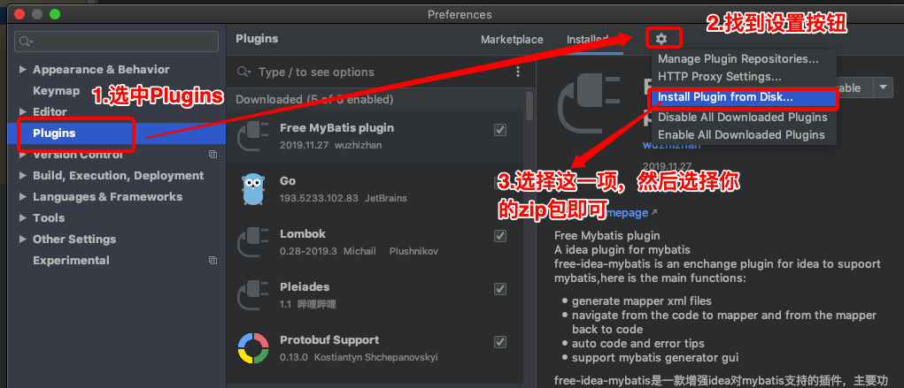
图12
然后安装完成，重启IDEA即可：

图13
各个展示模块对应插件项目里配置的来源参考下图：
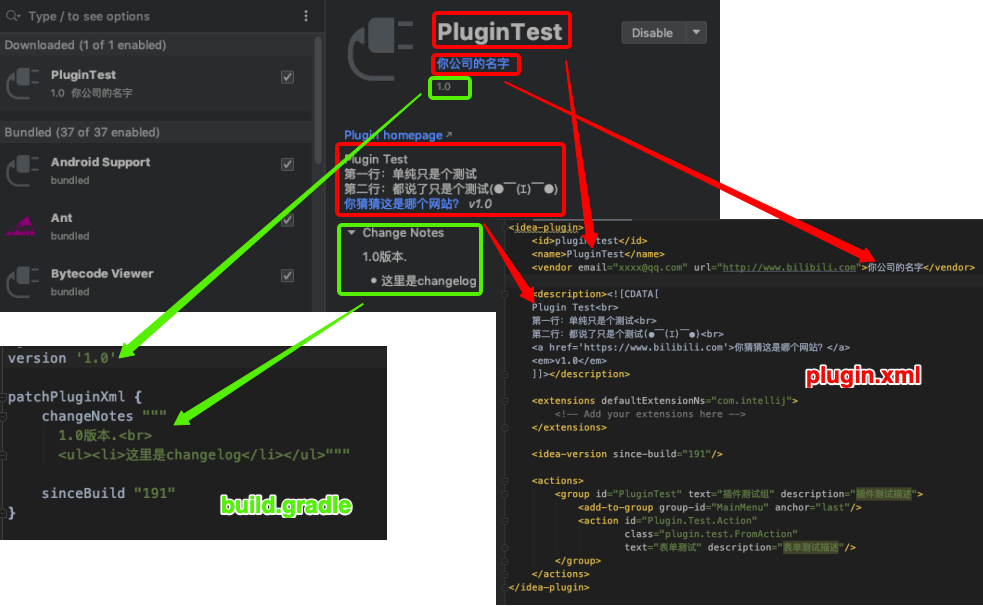
图14
重启后出现了跟调试IDEA里一样的菜单栏，选中后运行成功：

图15
写在最后
截止到这里，一个插件的开发、调试、安装就完成了，理论上通过这个简单的例子就可以实现一些实际的功能了，因为其完整展示了数据输入到数据获取整个过程。
因为工作当中需要写一个代码生成器，想要以一个IDEA插件的方式提供服务，所以在这里做个记录，防止以后再次用到时从零开始。。
要有一定的swing基础，我在开发代码生成器的时候，就是因为swing基础太差，布局花了非常多的时间。
🍒 之后不会深入去研究插件的开发，如果后续工作中有用到插件开发的其他的功能点，会更新在这个系列里，如果想深入搞IDEA插件开发，建议看IDEA的官方文档，官方文档有点乱，有很多只是简单介绍几句甚至没有示例，好在他们有个问答社区，建议搜索时用google搜英文关键词（google对英文搜索支持强大，没试过度娘，应该也可以搜到），里面会有人提问，比如版本兼容的问题就是google出来的，社区里正好有一篇问答。（链接放到开头里了）